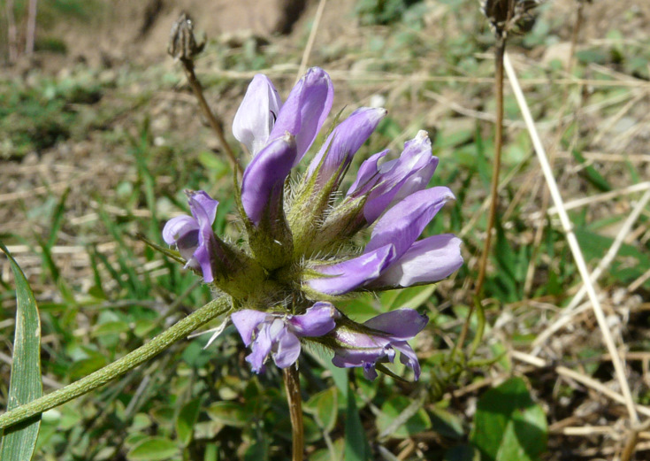
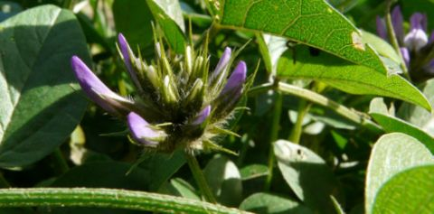
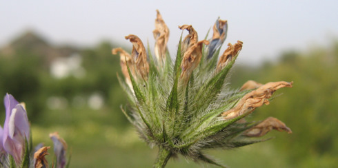
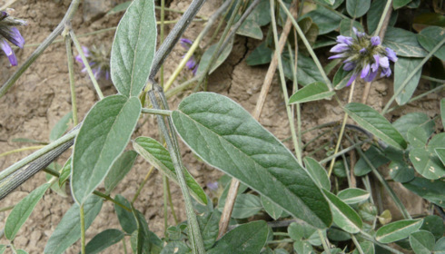
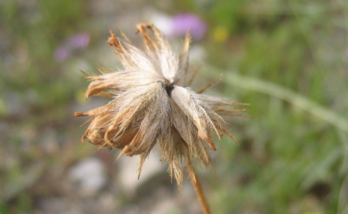
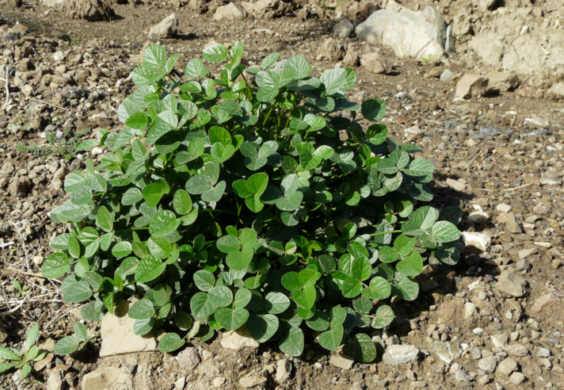
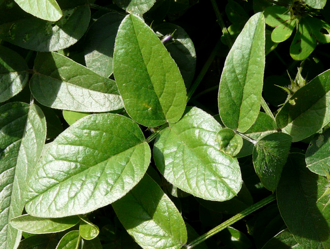
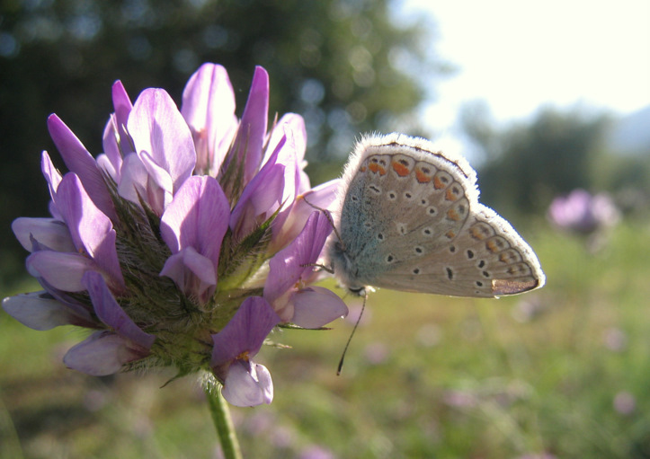
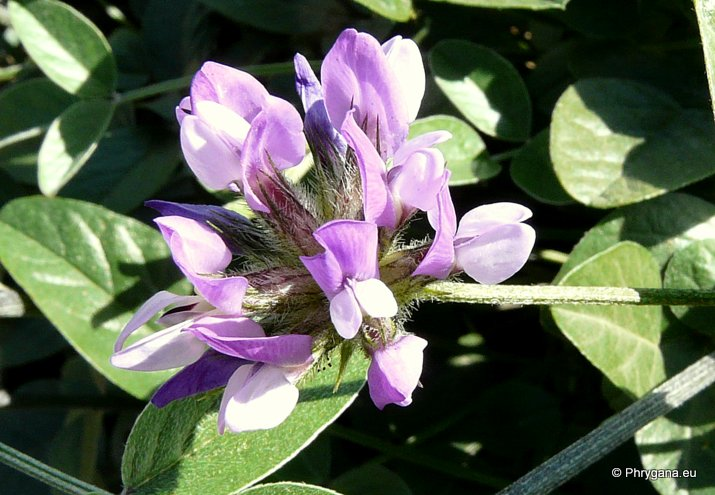

")
| PHRYGANA | Fauna | Flora | Galles | liste des espèces |
contact -
info - commentaires phrygana1 (at) gmail.com |
| Particularités crétoises | nouveautés | Mines | ressources naturelles |
| Bituminaria bituminosa (L.) STIRTON |
| 141 | Flora | FABACEAE LINDL. | Psoraleeae | Bituminaria FABR. |
|
 Bituminaria bituminosa Melambes (Agios Giorgos) 30 décembre 2009 |
| Syn.: Aspalthium bituminosum (L.) FOURR. -- Psoralea bituminosa L. | |
| la Psoralée bitumineuse -- Πισόχορτο --- Pitch Trefoil -- Trifolglio bituminoso -- Asphaltklee --- Trébol hediondo | |
| Plante à tige poilue à poils appliqués, à racine pivotante, à tige un peu ligneuse à la base | |
| Feuilles: composées imparipennées ( 3 folioles). Folioles ovales à lancéolées, 10-60 x 3-20(-30) mm, entières. | |
| Fleurs: têtes à 7 - 30 fleurs, hampe jusqu'à 30 cm. Couronne bleu violet à bleu blanchâtre, 15-20 mm. Calice à 5 dents inégales. | |
| Fruit: une gousse à une graine. | |
| Hauteur: 20 - 100 cm | Type biologique: hémicryptophyte ramifié |
| Floraison: janvier février mars avril mai juin juillet décembre | |
| Altitudes: 0 - 1000 m | |
| Statut en Crète: indigène - native | |
| Biotopes en Crète: phrygana, steppe, garrigue, terrains vagues, olivaies, dunes côtières. | |
| Distribution: région Méditerranéenne | |
| Espèce héliophile. Plante médicinale | |
| Note: dégage au froissement une odeur de bitume | |
| Plante nourricière pour: | ||
|
|
||
| Oxybia transversella | ||
|

 Bituminaria bituminosa Melambes (Agios Giorgos) 30 décembre 2009 Bituminaria bituminosa Melambes (Agios Giorgos) 09 avril 2008 |
|

 Bituminaria bituminosa Melambes (Agios Giorgos) 15 février 2010 Bituminaria bituminosa Melambes (Agios Giorgos) 09 avril 2008 |
|
 Bituminaria bituminosa Melambes (Agios Giorgos) 30 décembre 2009 |
|
 Bituminaria bituminosa Melambes (Agios Giorgos) 30 décembre 2009 |
|
 Bituminaria bituminosa Melambes (Agios Giorgos) 08 avril 2008 |
|
 Bituminaria bituminosa Melambes (Agios Giorgos) 03 mars 2010 |
| 21 janvier 2013 |
| © paul fontaine -- © Phrygana.eu 2007 -- 2013 |